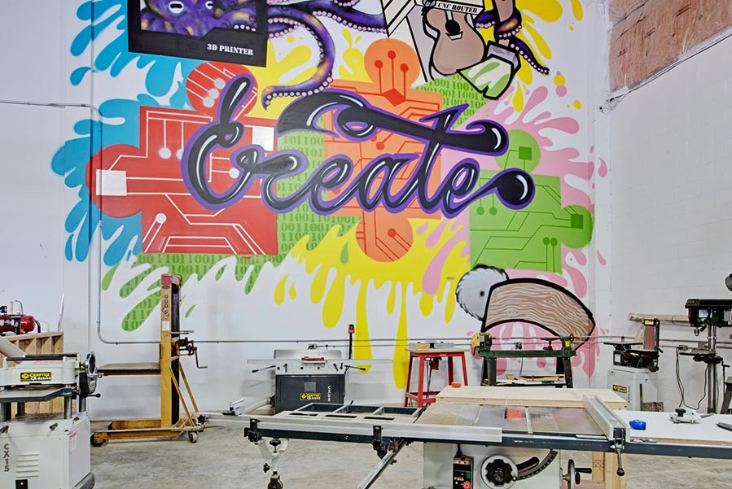

Our Toronto Location
What is a Makerspace?
A makerspace is a community-operated workspace where people with common interests surrounding technology can meet, socialize, collaborate, learn, and explore a variety of different technologies.
Material Makerspace gives you the chance to use professional equipment such as 3D printers, building kits, robotics, sewing machines, filmmaking tools and computers to help develop your STEAM (science, technology, engineering, art, math) skills.